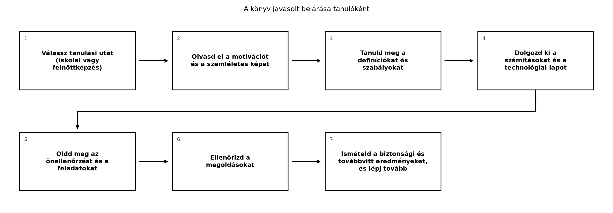
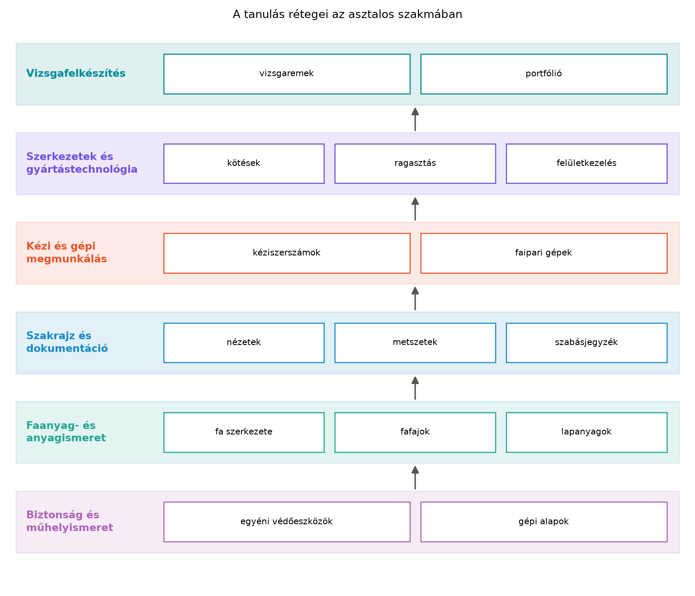
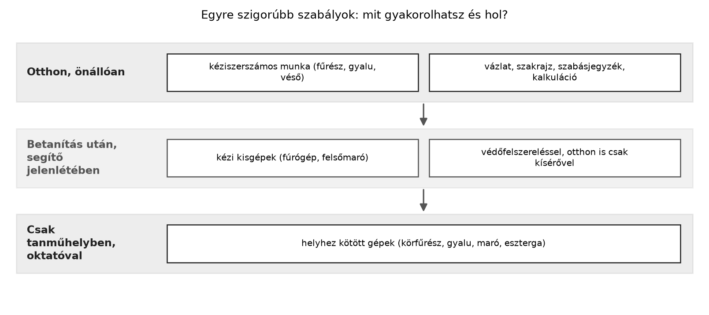

Képzeljük el, hogy egy asztalosműhelyben állunk. A gyalupadon félig kész szék, a fal mellett bükk és tölgy deszkák, a gépteremben körfűrész, egyengető gyalugép, alsómaró. A műhelyben egyszerre kell érteni a fa viselkedését, a rajzot, a szerszámokat, a gépek biztonságát és a pontos számolást. Ez a könyv azért készült, hogy ezt a sok szálat egyetlen, lépésről lépésre haladó tananyaggá rendezze.
A tanuló gyakran felteszi a kérdést: „Miért kell nekem fafajtát felismernem, ha csak gép mellett dolgozom?” vagy „Miért rajzoljak, ha a mester úgyis megmondja?” A könyv minden alfejezetben megmutatja, hogy az elméleti tudás közvetlenül használható a műhelyben, a gépen, a megrendelővel folytatott beszélgetésben. Aki csak betanult mozdulatokat ismer, az hibánál vagy új feladatnál megakad; aki érti az anyagot, a rajzot és a technológiát, az önállóan talál jó megoldást.
A műhelyben a munka mindig a három dolog összhangján múlik: rajz – anyag – művelet. A rajz megadja, mit kell készíteni; az anyag meghatározza, miből; a művelet pedig azt, hogy milyen sorrendben, milyen géppel vagy kéziszerszámmal. Ha bármelyik hiányzik vagy hibás, a termék rossz lesz, vagy a munka balesettel végződik.
Szemléletes kép. Egy konyhaszekrény ajtaja előttünk fekszik. A rajz szerint 720 mm magas, 450 mm széles, 19 mm vastag MDF lap, élein 2 mm-es élzáró. A szabásjegyzékből tudjuk, hogy egy 2800 mm × 2070 mm-es táblából hány ajtót tudunk kiszabni. A műveletsor: szabás, élzárás, furatok a vasalathoz, felületkezelés, vasalat beszerelése. Ha az anyag nedves vagy a rajzon rossz a méret, a kész ajtó nem illik a szekrényre. A könyv ezt a hármast minden fejezetben gyakoroltatja.
Definíció. Az asztalos olyan faipari szakember, aki faanyagból, faalapú lapokból és kapcsolódó segédanyagokból használati tárgyakat, bútorokat, belsőépítészeti elemeket, valamint épületbe beépülő nyílászárókat és szerkezeteket készít, szerel, javít és felújít.
A szakma két nagy munkaterületre oszlik:
A gyakorlatban gyakori a belsőépítészeti asztalos elnevezés is: lakások, üzletek, irodák belső terében készít egyedi bútorokat, burkolatokat, térelválasztókat, pultokat. A munkahely lehet egyedi műhely, ahol kis sorozatban, megrendelésre dolgoznak, vagy gyártósori üzem, ahol nagyobb darabszámban, gépesített technológiával készülnek alkatrészek. A helyszíni szerelő a készterméket a vevőnél szakszerűen beépíti és beállítja.
Az asztalos nem végzi el az ács, a kőműves, a villanyszerelő, a kárpitos vagy az üvegező teljes szakmáját. Az asztalos munkája határos ezekkel: például az ajtótok beépítésénél együttműködik a kőművessel, a konyhabútor világításánál a villanyszerelővel. A faanyagvédő szerrel, ragasztóval, lakkal végzett munka viszont már az asztalos feladata, de szigorú egészségvédelmi szabályokkal.
A magyarországi asztalos szakképzés korábban az OKJ-s szakképesítések, ma a Szakképzés 4.0 szerinti szakmák rendszerében működik. A pontos szakmaazonosítót, a képzési és kimeneti követelményeket (KKK) és a programtantervet (PTT) mindig a hatályos jogszabályok szerint kell ellenőrizni (ellenőrizendő: aktuális szakmaazonosító és KKK/PTT). A régi dokumentumokban az OKJ 34 543 02 Asztalos megnevezéssel találkozhatsz; ez már átalakult, de a szakmai alaptudás nagyrészt ugyanaz.
A könyv tíz része a képzés témaköreit követi:
| Rész | Fejezetek | Fő tartalom |
|---|---|---|
| I. | 1–3. fejezet | Útmutató, munkavédelem, tűz- és környezetvédelem |
| II. | 4–8. fejezet | A fa szerkezete, tulajdonságai, fahibák, fafajok, fűrészáru, lapanyagok |
| III. | 9–13. fejezet | Faipari szakrajz, ábrázolás, kötések rajza, műszaki dokumentáció, CAD |
| IV. | 14–20. fejezet | Forgácsolás, kéziszerszámok, kézi kisgépek, csiszolás, toldások, keret- és kávakötések |
| V. | 21–25. fejezet | Gépbiztonság, fűrész-, gyalu-, maró-, fúró-, eszterga- és csiszológépek, CNC |
| VI. | 26–30. fejezet | Ragasztás, lapszerkezetű termékek, pácolás, lakkozás, felületkezelés gépei |
| VII. | 31–36. fejezet | Bútorasztalos termékek, vasalatok, rögzítéstechnika |
| VIII. | 37–40. fejezet | Épületasztalos termékek: tokok, ajtók, ablakok, lépcsők, padlók |
| IX. | 41–44. fejezet | Szerelés, hibajavítás, helyszíni beépítés, gyártástervezés |
| X. | 45–48. fejezet | Kalkuláció, vállalkozás, foglalkoztatás, szakmai idegen nyelv, vizsga |
Továbbvitt eredmény. Ezt a tízrészes térképet használjuk a Tanulási útvonalak, vizsga és a szakmai jegyzetfüzet alfejezetben, amikor konkrét tanulási utat állítunk össze. A részek sorrendje nem véletlen: először a biztonságot tanuljuk, utána az anyagot, a rajzot, a kézi megmunkálást, csak ezután a gépeket, a ragasztást és a felületkezelést, végül a termékeket, a szerelést és a vállalkozást.
Definíció. A tanulási szerződés a könyv minden alfejezetének rögzített felépítése: motiváció, szemléletes kép, pontos definíciók és szabályok, technológia, kidolgozott számítások, minőségellenőrzés, tipikus hibák, valós eset, önellenőrzés, feladatok, megoldások, rövid összefoglaló, források.
A szerződés azért fontos, mert így minden alfejezetben ugyanazt a logikát követed:
Továbbvitt eredmény. Ezt a tanulási szerződést minden későbbi alfejezet felhasználja. Például a A munkavédelem fogalomrendszere és szabályozása alfejezetben a biztonsági dobozok, a A fa felépítése: törzs, évgyűrű, geszt, szijács, sejtek és vegyi összetétel alfejezetben a definíciók és az ábraigények, a Rajzeszközök, rajzfajták, szabványos vonalak és betűk alfejezetben a rajzi leírások, a Vállalkozási formák, a vállalkozás indítása és működése alfejezetben pedig a kalkulációs táblázatok követik ezt a szerkezetet.
A könyvben a következő kiemeléseket használjuk, hogy gyorsan tudd, milyen típusú ismeret következik:
**Definíció.** – pontos fogalom, mennyiség vagy
szabály.**Szabály.** – általános technológiai vagy biztonsági
szabály.**Szabvány.** – magyar vagy európai szabványból,
jogszabályból származó követelmény, a forrás megnevezésével és
ellenőrzési jelzéssel.**Összefüggés.** – képlet vagy műszaki
összefüggés.**Példa.** és **Számítás.** – kidolgozott
számpélda.**Megjegyzés.** – kiegészítő tudnivaló.**Figyelem.** – baleset- vagy hibaveszélyre
figyelmeztet.**Tilos.** – tiltott, veszélyes gyakorlat.**Gépbiztonság.** – gépi művelet biztonsági
előírásai.**Technológiai lap.** – lépésről lépésre vezetett
műveletsor.**Minőségellenőrzés.** – mit, mivel, milyen tűréssel
ellenőrizz.**Valós eset.** – megtörtént vagy valósághű eset.**Hiba.** – hibás gyakorlat, annak oka és
javítása.**Ábraigény.** – pontos szöveges rajzleírás a rajzoló
számára.**Továbbvitt eredmény.** – olyan tudás, amelyet későbbi
alfejezetek használnak.Jelölési konvenciók. A méretet milliméterben adjuk
meg, rajzon a mm-t nem írjuk ki. A szabásjegyzékben a sorrend
hossz × szélesség × vastagság. A pénzösszeget forintban
(Ft) írjuk, a tizedesjelet vesszővel, az ezres tagolást szóközzel. A
képletekben a mértékegységeket mindig kiírjuk. A szabványhivatkozásoknál
a szám a név mellett szerepel, de ha nem biztos, az adatot
(ellenőrizendő: …) jelöléssel látjuk el. A
kereszthivatkozások a megfelelő alfejezetre mutatnak, például: a(z) Szabásjegyzék és anyagnorma alfejezet.
Biztonsági keret. Helyhez kötött faipari gépet csak betanított, felügyelt tanuló kezelhet; védőberendezés nélkül, egyedül, fáradtan soha ne dolgozz. Ezt a gépi fejezetek elején mindig megismételjük, és a gyakorlati munkánál a gépkönyv és az oktató utasítása a mérvadó.
A könyvet nem kell feltétlenül elejétől a végéig olvasni, de az alábbi folyamat jó tanulási ívet ad. A gépi fejezeteknél a Gépbiztonság dobozt mindig olvasd el, mielőtt bármilyen gépet bekapcsolnál.

A tanulásnak is van minőségellenőrzése. Minden alfejezet végén az önellenőrző kérdések és a feladatok megoldása mutatja meg, hogy a tudásod elég-e a következő lépéshez. - Ha egy számítási feladatban az eredmény mértékegysége nem stimmel, ne lépj tovább. - Ha a rajz és az anyagjegyzék nem egyezik, keresd meg a hibát. - Ha egy gépi technológiai lépésnél nem tudod megmondani, hol van a védőberendezés, ne próbáld ki a gépen.
A tanulási szerződés tehát nem csak a könyv szerkezete: ez a munka ellenőrzési rendje is.
**Továbbvitt eredmény.** bekezdéseknél lassíts, és
ellenőrizd, érted-e a kapcsolatot.Egy felnőttképzésben tanuló asztalosjelölt, Gábor, először csak a gépekkel akart foglalkozni. A faanyagismeret fejezetet unalmasnak tartotta. Az első önálló feladatánál azonban egy bükk asztallapot szabott ki, és a lap néhány hét múlva vetemedett. A hiba oka a fa nedvességtartalma és a zsugorodás figyelmen kívül hagyása volt. Amikor újraolvasta a faanyagismereti fejezetet, megértette, miért kell a szárított anyagot rostirány szerint kiválasztani. A könyv tanulási szerződése segített neki, hogy a hibánál visszakeresse a pontos fogalmat és a helyes technológiát.
1. feladat (A)
Írj egy rövid mondatot, amelyben elmagyarázod egy ismerősödnek, hogy mit
csinál az asztalos, és mit nem!
2. feladat (A)
Sorold be a következő termékeket bútorasztalos vagy épületasztalos
munkaterülethez: éjjeliszekrény, bejárati ajtólap, konyhaszekrény,
ablak, szállodai recepciós pult, lépcsőfok.
3. feladat (B)
A könyv tíz része közül válaszd ki azt a részt, amelyik a legjobban
érdekel. Indokold meg, miért fontos előtte a megelőző részeket is
megtanulni!
4. feladat (B)
Magyarázd el, mi a különbség a **Technológiai lap.** és a
**Minőségellenőrzés.** kiemelés között! Mondj egy-egy
példát arra, mikor melyiket használjuk.
5. feladat (C)
Egy tanuló a gépi fűrészelés fejezetből csak a vágási technikát olvassa
el, a Gépbiztonság és az indítás előtti ellenőrzés részt kihagyja.
Milyen kockázatokkal dolgozik? Legalább három veszélyt nevezz meg, és
fogalmazd meg, mit kellene tennie.
6. feladat (D)
Készíts magadnak egy egyszerű tanulási tervet a következő két hétre!
Válassz ki egy alfejezetet, és írd be a tanulási szerződés lépéseit:
melyik nap mit olvasol, mit számolsz ki, és hogyan ellenőrzöd magad. A
terv legyen reális, napi 30–45 perc tanulással.
Önellenőrzés – válaszok
(ellenőrizendő: …) jelöléssel, például: „a pontos
szakmaazonosító ellenőrizendő”.1. feladat – megoldás
Példamondat: „Az asztalos fából és falapokból bútorokat, ajtót, ablakot,
lépcsőt készít és szerel, de nem kőműves, nem villanyszerelő és nem
ács.”
2. feladat – megoldás
Bútorasztalos: éjjeliszekrény, konyhaszekrény, szállodai recepciós pult.
Épületasztalos: bejárati ajtólap, ablak, lépcsőfok. (A recepciós pult
belsőépítészeti asztalos munka is lehet, ezért bútorasztaloshoz
soroltam.)
3. feladat – megoldás
Például: a VII. rész (bútorasztalos termékek) érdekel. Előtte kell a II.
rész (anyagismeret), a III. rész (szakrajz), a IV–V. rész (kézi és gépi
megmunkálás), hogy a bútorszerkezetet helyesen tudjam megtervezni és
legyártani. A biztonsági alapismeretek (I. rész) minden gépi munkához
elengedhetetlenek.
4. feladat – megoldás
A Technológiai lap lépéssor: cél, anyagok, gépek,
biztonsági előírások, műveletek ellenőrzési pontokkal. A
Minőségellenőrzés azt írja le, mit, mivel, milyen
tűréssel ellenőrzünk a munka végén vagy közben. Például a körfűrészgépi
darabolásnál a technológiai lap megmondja a vágás lépéseit, a
minőségellenőrzés pedig a vágott méret ellenőrzését derékszöggel és
mérőszalaggal.
5. feladat – megoldás
Kockázatok: (1) védőburkolat nélkül a fűrészlap elérhető, kézsérülés
veszélye; (2) hasítóék nélkül visszavágódás érheti; (3) elszívás nélkül
fapor belélegzése, ami keményfánál rákkeltő hatású lehet; (4) nem
ellenőrzi a munkadarabot, szeg vagy laza göcs miatt visszacsapódhat. A
tanulónak el kellene olvasnia a Gépbiztonság részt, az indítás előtti
ellenőrzőlistát, és csak oktatói felügyelettel dolgoznia.
6. feladat – megoldás
Példaterv: Hétfő: motiváció és definíciók elolvasása; szerda:
kidolgozott példa levezetése; péntek: önellenőrző kérdések; vasárnap:
feladatok megoldása; következő hét: technológiai lap és
minőségellenőrzés átismétlése. Minden nap után rövid jegyzet.
Az asztalos faanyagból és faalapú lapokból bútorokat, belsőépítészeti elemeket és épületbe beépülő szerkezeteket készít, szerel és javít. A két fő munkaterület a bútorasztalos és az épületasztalos; a munkavégzés lehet egyedi vagy gyártósori, műhelyi vagy helyszíni. Az asztalos munkája határos az ács, a kárpitos, az üvegező szakmájával, de nem helyettesíti azokat. A könyv tíz része a képzési témaköröket követi: biztonság, anyagismeret, szakrajz, kézi megmunkálás, gépek, ragasztás és felületkezelés, bútorok, épületasztalos termékek, szerelés, kalkuláció és vállalkozás. Minden alfejezet ugyanazt a tanulási szerződést követi: motiváció, szemléletes kép, definíció, technológia, számítás, minőségellenőrzés, hibák, valós eset, önellenőrzés, feladatok, megoldások, összefoglaló, források. A kiemelések (Definíció, Szabvány, Figyelem, Gépbiztonság, Technológiai lap stb.) segítik a gyors tájékozódást. A gépi munkát csak betanított, felügyelt tanuló végezhet. Továbbvitt eredmény: a tanulási szerződés és a kiemelések jelentését minden további alfejezet használja, ezért azokat már most pontosan kell érteni.
A tanulás elején a legfontosabb művelet nem a gyalulás, hanem a helyes útvonal kiválasztása. A műhelyben a mester először azt kérdezi: hol tartasz? Tudsz-e már szakszerűen mérni? Láttál-e már szakrajzot? Ha rossz tanulási útvonalon indulsz, elvesztegeted az idődet, vagy – ami rosszabb – veszélyes helyzetbe kerülsz a gépeknél, mert kimarad egy alapozó lépés. Ebben az alfejezetben megtanulod felmérni a jelenlegi tudásodat, kiválasztani a hozzád illő tanulási utat, összeállítani egy heti tanulási tervet, és elkezdeni a szakmai jegyzetfüzetedet, amely végigkísér a vizsgáig.
A tanulás rétegesen épül, mint egy szekrény: előbb a biztonság és a műhelyrend, utána a faanyag, a rajz, a kézi és gépi megmunkálás, majd a szerkezetek és a vizsgafelkészítés. Ha egy réteg kimarad, a felsőbb rétegek megroggyanak.

A belépő teszt nem osztályzat, hanem térkép. Megmutatja, melyik réteghez van már meg az alapod, és hol kell több időt töltened. A teszt négy területet mér:
A belépő tesztet kiértékeled, majd az alábbi három útvonal közül választasz. A belépő teszt mintafeladatait és kiértékelését itt, ennek a részletnek a végén találod.
Mintafeladatok (négy terület, területenként három kérdés; zsebszámológép használható):
Megoldások. 1. (a) 7/8; (b) 360 Ft; (c) 8 darab (a vágásveszteséget most nem számoljuk). 2. (a) 2,5 m; (b) 3,5 m² + 1,2 m² = 4,7 m² (mert 12 000 cm² = 1,2 m²); (c) 45 dm³. 3. (a) téglalap, 600 × 300 mm; (b) 600 × 18 mm; (c) 300 × 18 mm. 4. A szakszavak jelentését a kapcsolódó alfejezetek adják; a válasz akkor jó, ha a lényeg (a fűrészáru fűrészelt faanyag; a csap a kötés kiálló, a csaplyukba illeszkedő része; a lakk védő, átlátszó felületi bevonat) szerepel.
Pontozás. Összesen 12 kérdés, helyes válaszonként 1 pont. 10–12 pont: vizsgafelkészítő útvonal; 6–9 pont: kiegészítő útvonal; 0–5 pont: teljes útvonal.
1. Teljes útvonal – 0-ról, önállóan
Ez az útvonal azoknak szól, akiknek nincs faipari előképzettségük, vagy nagyon régen tanultak. A könyvet az elejétől a végéig haladva, az alábbi sorrendben dolgozod fel:
2. Kiegészítő útvonal – iskolai vagy tanfolyami órákhoz igazodóan
Ha nappali képzésben, esti iskolában vagy tanfolyamon tanulsz, a tanár ad ütemet. A kiegészítő útvonal arra szolgál, hogy a könyvvel párhuzamosan haladj, és az elméletet a műhelygyakorlattal összekösd. Minden héten:
3. Vizsgafelkészítő útvonal – gyakorlattal rendelkezőknek
Ha már dolgoztál asztalosként, vagy régebben elvégeztél egy képzést, de a vizsgára készülsz, ne olvasd el a teljes könyvet oldalról oldalra. Helyette:
A szakmai vizsga pontos felépítését a hatályos képzési és kimeneti követelmények (KKK), a programtanterv (PTT) és a vizsgaszabályzat tartalmazza. A régi OKJ 34 543 02 Asztalos szakképesítés és a Szakképzés 4.0 szerinti Asztalos szakma követelményei eltérhetnek; ezt mindig ellenőrizd az aktuális jogszabályban. Általában a következő részekből áll:
A vizsgaremek dokumentációjához erősen ajánlott (sok vizsgaszervezőnél előírt) a szakmai jegyzetfüzet és a fényképes munkanapló (ellenőrizendő: hatályos KKK és vizsgaszabályzat), mert ebből látja a vizsgabizottság, hogy a munkafolyamatot érted, nemcsak a kész darabot adtad le.
Definíció (szakmai jegyzetfüzet). A szakmai jegyzetfüzet a tanuló saját, folyamatosan bővülő munkadokumentuma, amelybe rögzíti a tanult fogalmakat, szabályokat, képleteket, rajzvázlatokat, technológiai lépéseket, mérési eredményeket, hibákat és javítási módokat.
A jegyzetfüzet nem másolás, hanem aktív tanulás: amit leírsz, azt könnyebben megjegyzed. Vezesd a következő módon:
Továbbvitt eredmény. A szakmai jegyzetfüzetet és a fényképes munkanaplót a Tanulóműhely, alap szerszámkészlet és a biztonságos gyakorlás határai alfejezetben is használjuk, mert a biztonságos gyakorlás határainak rögzítése és a felügyelet dokumentálása a jegyzetfüzetben történik. Később, a Vizsgaremek és gyakorlati vizsgafeladat: tervezés, dokumentáció, értékelés alfejezetben a vizsgaremek dokumentációjának alapját ez a füzet adja.
A heti tanulási terv összehangolja az elméletet, az önellenőrzést és a műhelygyakorlatot. Ha nincs heti terved, könnyen elmaradsz, vagy túl sokat vállalsz egyszerre.
Eljárás (recept): heti tanulási terv készítése.
Példa egy hétre, a fa nedvességtartalma témakörben:
| Nap | Tanulási tevékenység | Idő (becsült) |
|---|---|---|
| Hétfő | Elmélet: A faanyag nedvességtartalma: mérés és számítás elolvasása, jegyzetelés | 60 perc |
| Kedd | Számítási feladatok: nedvességtartalom képlete, behelyettesítés | 45 perc |
| Szerda | Műhelygyakorlat: fűrészáru tapintása, nedvességmérő bemutatása felügyelővel | 90 perc |
| Csütörtök | Önellenőrzés és feladatok megoldása | 45 perc |
| Péntek | Munkanapló beírása, fényképek rendezése | 30 perc |
| Szombat | Ismétlés, szakszótár bővítése | 20 perc |
A tanulás minőségét ugyanúgy ellenőrizni kell, mint egy munkadarabét. Minden hét végén tedd fel magadnak ezeket a kérdéseket:
Ha bármelyikre nem a válasz, lépj vissza, és ismételd meg az adott részt, mielőtt továbbhaladnál.
Egy felnőtt tanuló, aki korábban otthon barkácsolt, úgy gondolta, hogy a teljes tananyagot átugorhatja, és rögtön a gépi gyakorlattal kezdi. A műhelyben az oktató megkérte, hogy állítsa be az egyengető gyalugép késtengely-védőjét (hídvédő). A tanuló nem tudta, hogyan kell a védőt a munkadarab szélességéhez és vastagságához állítani, és mi a helyes kéztartás (toló- és nyomóeszköz használata), mert a gépbiztonsági fejezetet kihagyta. Az oktató leállította, és visszaküldte az alapokhoz. A tanuló kitöltötte a belépő tesztet, és kiderült, hogy a mértékegység-átváltásban is vannak hibái. Miután a teljes útvonalat választotta, és a jegyzetfüzetébe leírta a biztonsági szabályokat, a gépi gyakorlat már értelmet nyert. A vizsgáján a vizsgaremek dokumentációját a saját jegyzeteiből állította össze, és a bizottság dicsérte a fényképes munkanaplóját.
Válaszold meg a következő kérdéseket, indoklással.
1. feladat (A) – Írd le a három tanulási útvonal nevét, és mindegyikhez írj egy mondatot arról, kinek ajánlott.
2. feladat (A) – Végezd el az átváltásokat: (a) 2500 mm = ? m; (b) 0,045 m³ = ? dm³; (c) 3,2 m² = ? cm².
3. feladat (B) – Tegyük fel, hogy heti 3 napot tanulsz, naponta legfeljebb 90 percet. Készíts egy heti tervet a A faanyag nedvességtartalma: mérés és számítás alfejezethez a megadott táblázat mintájára. Írd be a napi tevékenységeket és az időtartamokat.
4. feladat (B) – Melyik útvonalat választanád, ha már dolgoztál asztalosként, de a szakrajz és a kalkuláció gyenge? Indokold meg választásodat.
5. feladat (C) – Hibaelemzés: egy tanuló a vizsgaremek elkészítése után akarja megírni a dokumentációt, de nem vezetett jegyzetfüzetet, és fényképei sincsenek. Milyen következményei lehetnek? Hogyan előzhette volna meg ezt?
6. feladat (D) – Válassz ki egy számodra fontos alfejezetet a könyvből, és készíts hozzá egy rövid szakszótárat (legalább 5 szakszó), valamint írj egy tervet, hogyan gyakorlod a műhelyben az adott témát.
Önellenőrzés – válaszok
1. feladat (A) – A három útvonal: teljes (kezdőknek, 0-ról), kiegészítő (iskolai vagy tanfolyami órákhoz), vizsgafelkészítő (gyakorlattal rendelkezőknek). A mondatok tartalmazzák a fenti meghatározásokat.
2. feladat (A) – (a) 2500 mm = 2,5 m; (b) 0,045 m³ = 45 dm³ (mert 1 m³ = 1000 dm³); (c) 3,2 m² = 32 000 cm² (mert 1 m² = 10 000 cm²).
3. feladat (B) – Például:
| Nap | Tevékenység | Idő |
|---|---|---|
| Hétfő | Elmélet elolvasása, jegyzetelés (60 perc); képlet másolása a jegyzetfüzetbe (30 perc) | 90 perc |
| Szerda | Műhelygyakorlat felügyelővel: nedvességmérés | 90 perc |
| Péntek | Számítási feladatok és önellenőrzés (60 perc); munkanapló beírása (30 perc) | 90 perc |
Összesen 270 perc; egyik nap sem haladja meg a 90 percet.
4. feladat (B) – A vizsgafelkészítő útvonalat választanád, mert a gyakorlati tudásod megvan, de a szakrajz és a kalkuláció gyenge; ezeket célzottan pótolhatod a III. és X. rész fejezeteivel.
5. feladat (C) – A következmény: a dokumentáció hiányos, a vizsgabizottság nem tudja ellenőrizni a munkafolyamatot, a vizsgaremeket elutasíthatják vagy alacsonyabb pontot kap. Megelőzés: már a tervezéstől vezetni kellett volna a jegyzetfüzetet, minden munkafázist fényképezni, és a technológiai lépéseket rögzíteni.
6. feladat (D) – Példa: a Zsugorodás, dagadás és vetemedés: a fa „mozgása” alfejezethez szakszavak: zsugorodás, dagadás, húrirányú zsugorodás, sugárirányú zsugorodás, rosttelítettségi határ, egyensúlyi fanedvesség. Műhelygyakorlati terv: mérj meg egy kiszárított és egy nedves deszkát tolómérővel, számold ki a méretváltozást, és jegyezd fel a jegyzetfüzetbe.
A tanulás sikere azon múlik, hogy a saját előképzettségedhez illő útvonalat választod. A belépő teszt felméri az alapműveleteket, mértékegységeket, térlátást és alapfogalmakat. Három útvonalat kínálunk: a teljes útvonalat kezdőknek, a kiegészítőt iskolai/tanfolyami órákhoz, és a vizsgafelkészítőt gyakorlattal rendelkezőknek. A vizsga szerkezete (interaktív írásbeli, gyakorlati vizsgaremekkel, szóbeli) a hatályos KKK és vizsgaszabályzat szerint ellenőrizendő. A szakmai jegyzetfüzet a tanuló folyamatosan bővülő munkadokumentuma: szakszótárt, képleteket, rajzvázlatokat, technológiai lapokat és fényképes munkanaplót tartalmaz. A heti tanulási terv összehangolja az elméletet, az önellenőrzést és a műhelygyakorlatot; az eljárás lépéseit a fejezet receptje adja meg. Továbbvitt eredmény: a szakmai jegyzetfüzet és a fényképes munkanapló a Tanulóműhely, alap szerszámkészlet és a biztonságos gyakorlás határai alfejezetben a biztonságos gyakorlás dokumentálását szolgálja, később pedig a vizsgaremek dokumentációjának alapja lesz.
Első nap a tanműhelyben a folyosón még csak hallod a gépek hangját. Belépsz, és azt látod, hogy a gyakorlott tanulók is mindig ugyanazt a rendet követik: előbb ellenőrzik a szerszámot, felveszik a védőfelszerelést, és csak utána kapcsolnak gépet. Ez a fejezet arról szól, hogyan állítsd össze a saját induló készletedet, és hol húzódik a biztonságos gyakorlás határa. Ha ezt már az első naptól betartod, elkerülöd a legtöbb tipikus kezdő balesetet és anyagtönkremenetelt.
Definíció. A tanulóműhely olyan oktatási vagy gyakorló munkahely, ahol a tanuló szakképzett oktató vagy gyakorlati oktató irányításával, a műhely házirendje és a munkavédelmi előírások szerint dolgozik. A tanulóműhely nem „szabadgazdálkodás”: minden gépi munka felügyelethez, betanításhoz és a gépkönyv szerinti használathoz kötött.
A biztonságos gyakorlás alapelve egyszerű: kéziszerszámos munkát és dokumentációs feladatot otthon is végezhetsz, gépet viszont csak akkor, ha arra külön betanítást kaptál, és az oktató a közelben van. Ezt a határt soha ne told el „csak egy vágás” kedvéért.
Továbbvitt eredmény. A felügyelt gépi munka szabálya: helyhez kötött faipari gépet (körfűrész, egyengető és vastagsági gyalu, alsómaró, szalagfűrész, láncmaró, eszterga, CNC) a tanuló csak betanítás után, oktató felügyelete mellett, a gépkönyv szerint kezelhet. Ezt a szabályt minden későbbi gépi technológiai lap (IV–VI. rész) és a vizsgafelkészítő fejezet visszaidézi.
A következő ábra nem lépéssor, hanem három, egyre szigorúbb szabályú kategória: felülről lefelé nő a kockázat, és vele a feltételek száma.

Az ábra azt mutatja: minél nagyobb a szerszám teljesítménye és minél nehezebb megállítani a forgó részt, annál szigorúbb a szabály. A kéziszerszámot meg tudod állítani a kezeddel, a gépet nem.
Kezdő asztalosként nem kell azonnal teljes gépparkot vásárolnod. A kéziszerszámokkal tanulható meg legjobban a rostirány, a méretpontosság és a szerszámvezetés. Az alábbi táblázat egy minimális, de jól működő induló készletet mutat. Az árak tájékoztató mintaárak, a számítás menetét mutatják, nem valós piaci ajánlatok.
| Eszközcsoport | Javasolt alapkészlet | Fő feladat | Tájékoztató mintaár (Ft) | Megjegyzés |
|---|---|---|---|---|
| Mérő- és rajzolóeszközök | acélvonalzó 300 és 600 mm, derékszögelő, állítható szögmérő, tolómérő 0–150 mm, mérőszalag 3–5 m, rajzceruza, jelölőkés | kimérés, derékszög ellenőrzése, előrajzolás | 15 000–35 000 | A tolómérő 0,1 mm pontosságot mutat; kíméld az élet. |
| Fűrészek | darabolófűrész (keresztvágó), hasítófűrész, hátfűrész | kereszt- és hosszirányú vágás, pontos csapolás | 8 000–25 000 | A fűrészlap fogazása a feladathoz illeszkedjen. |
| Gyaluk | simítógyalu, nagyológyalu, rövidgyalu | felület simítása, derékszög készítése | 12 000–30 000 | Éles vas, vékony forgács. |
| Vésők | 6, 12, 20, 26 mm-es véső, fakalapács vagy ütőkalapács | csaplyuk, fészek, illeszték | 10 000–20 000 | A vésőt soha ne használd feszítővasként. |
| Szorítók | 2–4 db csavaros asztalos szorító, 1–2 sarokszorító | ragasztásnál, összeállításnál | 6 000–15 000 | A pofákat mindig puhítsd falappal, nehogy benyomódjon. |
| Munkaasztal, gyalupad | stabil, sík munkalap, satu | munkadarab rögzítése, gyalulás, vésés | 50 000–120 000 (saját építés olcsóbb) | Otthon is kiváltható merev munkapaddal. |
| Csiszolóeszközök | csiszolótuskó, csiszolópapír P80–P240 | felület előkészítése | 3 000–8 000 | Csiszolás alatt mindig porvédő. |
| Kiegészítők | csavarhúzó, fogó, reszelő, fúrószárkészlet, csavarbehajtó bitek | szerelés, rögzítés | 10 000–20 000 | Az akkus fúrógépet csak betanítás után használd. |
A szerszámfal a táblázat csoportjait mutatja: 1 acélvonalzó, 2 derékszögelő, 3 állítható szögmérő, 4 tolómérő, 5 mérőszalag, 6 jelölőkés, 7 rajzceruza; 8 darabolófűrész, 9 hasítófűrész, 10 hátfűrész; 11 nagyológyalu, 12 simítógyalu, 13 rövidgyalu; 14 vésők (6, 12, 20, 26 mm), 15 fakalapács; 16 csavaros asztalos szorító, 17 sarokszorító; 18 csiszolótuskó csiszolópapírral. A nagyított fogazat mutatja a különbséget: a darabolófűrész fogai késszerűek (keresztben vágják a rostot), a hasítófűrészéi vésőszerűek (a rost mentén hasítanak); a nagyológyalu vasának éle íves, a simítógyalué egyenes, csapótoldallal. Az interaktív változatban az eszközre mutatva megjelenik a neve és a fő feladata, a gombokkal csoportonként szűrhetsz.
A pontos típusokat, márkákat szándékosan nem írjuk elő, mert az a későbbi gyakorlatban munkáltatótól, iskolától és költségkerettől függ. A lényeg: minden szerszámod legyen éles, ép nyelű, tiszta felületű, és legyen hol biztonságosan tárolni.
Még a kézi fűrészelés is szoros közelségbe hozza a forgácsot, a port és az éles szerszámokat. A védőfelszerelést nem „akkor veszem fel, ha gépet használok”, hanem már a kézi munka első percétől.
Definíció. Az egyéni védőeszköz (EVE) olyan eszköz, amely a munkavállalót vagy tanulót a munkahelyi kockázat ellen védi. Az EVE kiválasztását és viselését mindig a műhely kockázatértékelése, a szerszám vagy gép dokumentációja és a munkavédelmi oktatás határozza meg.
A tankönyv kifejezetten önálló tanulásra készült, ezért fontos, hogy tudd: mit gyakorolhatsz otthon biztonságosan, és mit csak tanműhelyben, felügyelettel.
Otthon, önállóan gyakorolható:
Otthon, önállóan NEM gyakorolható:
Szabály. Amikor bizonytalan vagy, kérdezd meg az oktatódat, és nézd meg a szerszám vagy gép dokumentációját. A „majd megoldom” gondolata a leggyakoribb forrása a kezdő baleseteknek.
A gépi munka szabályait a későbbi fejezetek részletesen, gépenként tárgyalják. Itt az általános keretet rögzítjük, amely minden technológiai lap elején visszatér.
Gépbiztonság. - Helyhez kötött faipari gépet tanuló csak betanítás után, oktató felügyelete mellett, a gépkönyv szerint kezelhet. Védőberendezés nélkül soha. - Tilos védőburkolatot, hasítóéket, ütközőt, elszívócsonkot eltávolítani vagy rögzítését megbontani. - Tilos kesztyűt viselni forgó szerszám közelében; a kesztyűt a szerszám becsavarhatja. - Tilos a munkadarabot kézzel tolni a szerszám felé tolófa, tolókocsi vagy megfelelő előtoló nélkül, ha a kéz a veszélyes zónába érne. - Tilos túl rövid vagy túl keskeny darabot gépi megmunkálással alakítani. - Tilos repedt, laza göcsű, szeges vagy csavaros anyagot gépi megmunkálásra befogni. - Tilos a gépet bekapcsolni, ha az elszívó nem működik, a munkaterület rendetlen, vagy a vészleállító nem elérhető. - Szerszámcsere, beállítás, tisztítás előtt mindig le kell állítani a gépet, megvárni, amíg a szerszám megáll, és áramtalanítani.
Tilos. A fenti pontok közül egyet sem szabad „csak most” alapon felülbírálni. Aki védőburkolat nélkül dolgozik, nemcsak magát, hanem a műhelyben dolgozó társait is veszélyezteti.
A műhely gyakorlatát Magyarországon és az Európai Unióban több szabály határozza meg. A pontos számok, határértékek és hatályok az évek során változhatnak, ezért az alábbiak tájékoztató jellegűek.
Szabvány. - A munkavédelem alapjait a munkavédelmi törvény (1993. évi XCIII. törvény – ellenőrizendő: hatályos szöveg) adja. - A munkaeszközök, így a faipari gépek biztonságát az uniós gépirányelv / géprendelet (jelölve: hatályos jogszabály) és a faipari gépek biztonsági szabványsorozata, az MSZ EN ISO 19085 (ellenőrizendő: pontos szám és hatály) rögzíti. - A fapor, különösen a keményfa-por rákkeltő hatású; expozíciós határértékét és besorolását jogszabály írja elő (ellenőrizendő: hatályos rendelet és érték). - Az egyéni védőeszközök követelményei között a légzésvédőkre például az MSZ EN 149, a szem- és arcvédőkre, valamint a hallásvédőkre külön európai szabványok vonatkoznak (ellenőrizendő: pontos szabványok).
A szabályok célja nem a korlátozás, hanem az, hogy a tanuló a gépet akkor kezelje, amikor már érti a veszélyét, és van mellette valaki, aki be tud avatkozni. A későbbi fejezetek ezeket a szabályokat minden gépnél a műveletre lebontva ismertetik.
Az otthoni vagy iskolai kisműhelyben is érvényes a rend: a padló száraz, a munkaterület szabad, a szerszámok a helyükön. A fűrészpor és a csiszolási por nemcsak egészségügyi, hanem tűzvédelmi kockázat is.
Szabály. A munkaterületet úgy hagyd el, ahogyan beléptél: a szerszámok a helyükön, a padló seperve, a hulladék a kijelölt gyűjtőben, és a gépek áramtalanítva.
A tankönyvben több helyen interaktív ábrát és kalkulátort találsz. Ezek arra valók, hogy a képleteket ne magold, hanem kipróbáld. Például:
A HTML-kiadásban az ábrák mozgathatók, a PDF-ben és az EPUB-ban statikus képet látsz. Az ábrák mellett mindig ott a képlet, a mértékegység és a magyarázat, hogy az eredményt te magad is ki tudd számolni zsebszámológéppel vagy táblázatkezelővel.
Technológiai eljárás: számozott lépések, ellenőrzési pontokkal.
Ezt a listát később a gépi technológiai lapok kiegészítik: gépi munkánál jön hozzá a gép indítás előtti ellenőrzés, az elszívás, a vészleállító és a szerszám megengedett fordulatszámának ellenőrzése.
Kéziszerszámos gyakorlatnál a minőségellenőrzés elsősorban a méretek, a derékszög és a felületi érdesség ellenőrzése.
Ha méreteltérés van, mindig a rajz és a szabásjegyzék az irányadó. A javítást úgy végezd, hogy a hibás darabot ne told be másik alkatrész helyére.
Egy kezdő tanuló otthon szeretett volna gyakorolni. Vett egy csomag fenyőlécet, és készített egy kis fiókot. A munkadarabokat kézi fűrésszel, simítógyaluval és vésővel alakította ki, a fecskefarkú fogazást először papíron, majd hulladékdarabon próbálta ki. Az asztali körfűrészt nem is vette elő, mert nem kapott rá betanítást. A fiók elkészült, a tanuló pedig megtanulta a kézi vésés és a fűrészelés pontosságát. A tanulság: az alapkészségeket otthon is lehet gyakorolni, a gépi műveleteknek viszont megvan a maguk helye a tanműhelyben.
Egy másik nap a tanműhelyben az oktató észrevette, hogy egy másik tanuló védőburkolat nélkül akarta elindítani az egyengető gyalut. Azonnal leállította, és elmagyarázta: a késtengelybe nyúló kéz törését vagy rosszabb sérülését csak a védőburkolat akadályozza meg. A tanuló azóta minden gépet az indítás előtti ellenőrzéssel kezd.
1. feladat (A) Sorold fel az alap mérő- és rajzolóeszközöket, és mindegyikhez írd oda, mire használod.
2. feladat (A) Mondd meg, igaz-e: „Az asztali körfűrészt otthon is használhatom, ha már láttam, hogyan működik.” Indokold.
3. feladat (B) Készíts táblázatot: bal oldalon az otthon gyakorolható tevékenységek, jobb oldalon a csak tanműhelyben, felügyelettel végezhető tevékenységek. Írj legalább 4-4 példát.
4. feladat (B) Egy kezdő tanuló kézi fűrésszel 300 mm hosszú darabokat vág. Hogyan ellenőrzi a derékszöget? Mi a teendő, ha a vágás nem derékszögű?
5. feladat (C) Egy tanuló otthon akar egy kis fa dobozt készíteni. Milyen munkafolyamatot tervezzen, és hol kell különösen óvatosnak lennie a biztonság szempontjából? Válaszodban tüntesd fel az EVE-t és a rögzítést is.
6. feladat (D) Egy gyakorló darabot derékszögben mérsz: a két átló 603 mm és 598 mm. A keret szélessége 400 mm. Derékszögű-e? Becsüld meg az oldalhosszt és a szögeltérést, és tegyél javaslatot a javításra.
Önellenőrzés – válaszok
1. feladat - Acélvonalzó: hosszmérés, egyenes vonal jelölése. - Derékszögelő: derékszög ellenőrzése, merőleges vonal húzása. - Állítható szögmérő: tetszőleges szög bemérése és átmásolása. - Tolómérő: külső és belső méretek pontos mérése (0,1 mm). - Mérőszalag: nagyobb hosszak, anyagok mérése. - Jelölőkés/rajzceruza: vágási és csapozási vonalak rajzolása.
2. feladat Hamis. Az asztali körfűrész helyhez kötött gép, amelyet tanuló csak betanítás után, oktató felügyeletével, a gépkönyv szerint kezelhet. Otthon, egyedül tilos használni.
3. feladat Példatáblázat:
| Otthon gyakorolható | Csak tanműhelyben, felügyelettel |
|---|---|
| Mérés, előrajzolás | Asztali körfűrész használata |
| Kézi fűrészelés, gyalulás, vésés | Egyengető gyalugép kezelése |
| Szakrajz, szabásjegyzék, kalkuláció | Alsómaró, CNC-gép kezelése |
| Kézi csiszolás, kis felületen pácolás | Faesztergálás |
4. feladat A vágott darab derékszögét derékszögelővel ellenőrizzük: a derékszög belső élével a vágott élhez illesztjük, és megnézzük, van-e fényrés. Ha a vágás nem derékszögű, a darabot satuba fogva gyaluljuk vagy csiszoljuk a derékszögre, vagy jobb esetben a fűrészt vezető vonalat módosítjuk a következő vágásnál. Fontos: a fűrészlap a jelölővonal hulladék oldalán fusson.
5. feladat A tanuló először rajzolja meg a doboz méreteit, készítsen szabásjegyzéket. Mérje ki és jelölje elő az anyagot. A darabokat satuba/szorítóba fogva fűrészelje, majd gyalulja derékszögre. A kötéseket (pl. ollós csap) előbb hulladékdarabon próbálja ki. Végig viseljen védőszemüveget és porvédőt, zárt cipőt. Ne használjon gépet. A ragasztásnál szorítóval rögzítsen, és kövesse a ragasztó adatlapját. Különösen óvatos legyen a vésővel, mindig a véső élével elfelé dolgozzon, a kezét tartsa a vágás mögött.
6. feladat Téglalapnak az átlói egyenlők; itt 603 mm ≠ 598 mm, tehát az átlók különbsége 5 mm, és a keret nem derékszögű, hanem paralelogramma-szerűen ferde. Az oldalhossz egyetlen érték: a paralelogrammára , ezért . A szögeltérés: , ezért , vagyis a sarok kb. -kal tér el a derékszögtől; 400 mm-en ez kb. 3,4 mm kitérés. Javítás: ragasztás előtt a keretet a hosszabb átló mentén szorítóval össze kell nyomni, amíg az átlók egyenlők lesznek; kész darabnál a ferde éleket derékszögre kell gyalulni. Ellenőrzés: a két átló különbsége legfeljebb 1 mm (ellenőrizendő: tájékoztató tűrés). Gyakorlatban a derékszöget derékszögelővel és az átlók összemérésével ellenőrzik.
A tanulóműhelyben a tanuló szakképzett oktató felügyeletével dolgozik; a gépi munkához betanítás, a gépkönyv ismerete és a védőberendezések megléte szükséges. A kezdő asztalos alapkészlete mérő- és rajzolóeszközökből, kézi fűrészekből, gyalukból, vésőkből, szorítókból, munkaasztalból, csiszolóeszközökből és kiegészítőkből áll. Az egyéni védőeszközök – védőszemüveg, porvédő, hallásvédő, munkaruha, zárt cipő – már az első kézi munkától kötelezők. Otthon önállóan kéziszerszámos munka, rajz, számítás és kalkuláció gyakorolható; helyhez kötött gépet és betanítás nélkül kézi kisgépet használni tilos. A gépi munka előtt mindig ellenőrizni kell a szerszámot, a védőberendezést, az elszívást és a munkaterületet. Szerszámcsere, beállítás és takarítás előtt a gépet le kell állítani, megvárni a szerszám leállását, és áramtalanítani. A szabályokat a munkavédelmi törvény, az MSZ EN ISO 19085 sorozat és a faporra vonatkozó jogszabályok rögzítik (ellenőrizendő: hatályos pontos adatok).
Forrástípusok: munkavédelmi törvény, faipari gépek biztonsági szabványai (MSZ EN ISO 19085 sorozat), fapor-expozícióra vonatkozó jogszabály, egyéni védőeszközökre vonatkozó európai szabványok, a tanműhely házirendje és a gépek gépkönyve.
Ellenőrizendő pontok: a munkavédelmi törvény hatályos szakasza; a faipari gépek biztonsági szabványainak pontos száma és hatálya; a fapor-határértékek jelenlegi értéke; az FFP-szűrőkre vonatkozó MSZ EN 149 pontos követelményei; a kisműhelyre vonatkozó tűzvédelmi előírások (OTSZ); a táblázatban megadott mintaárak tájékoztató jellege.